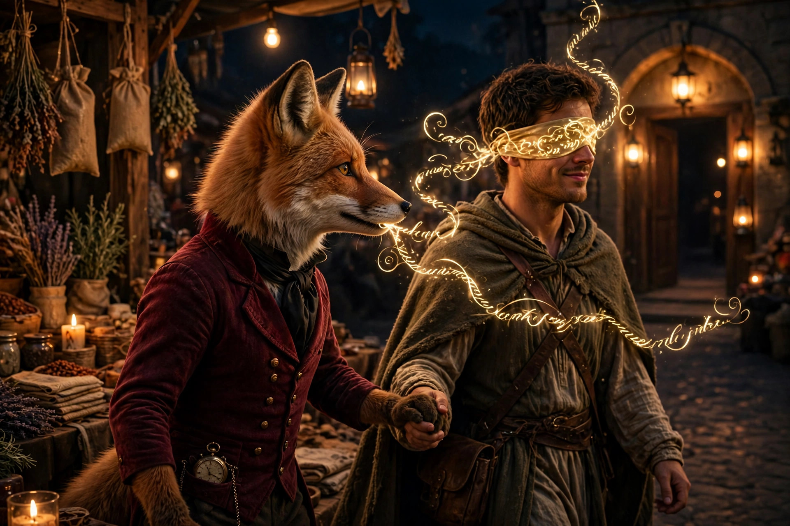
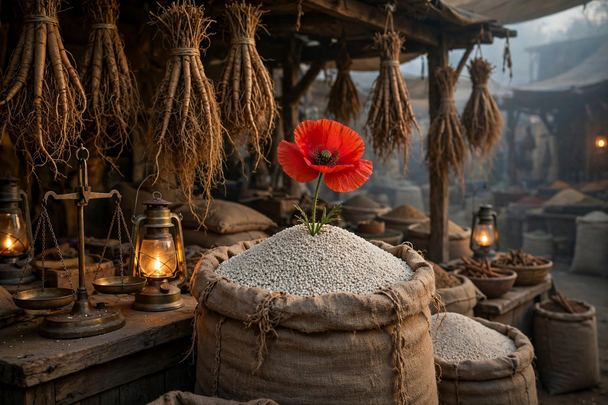
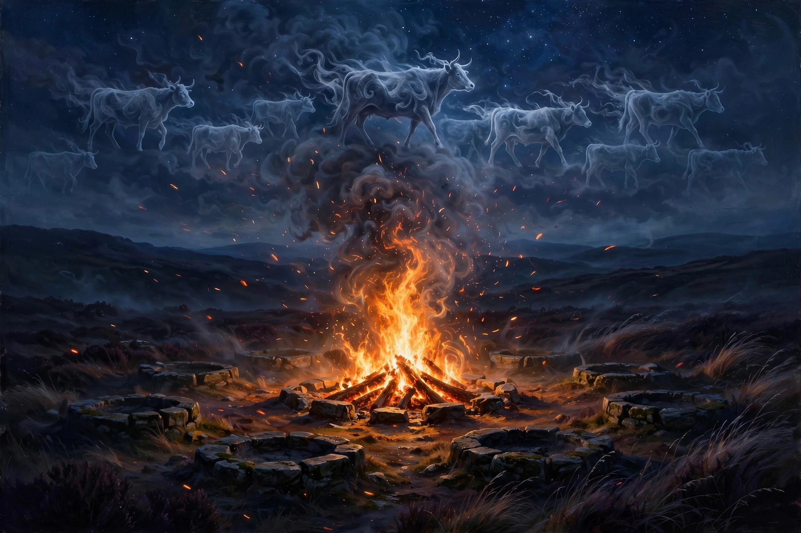
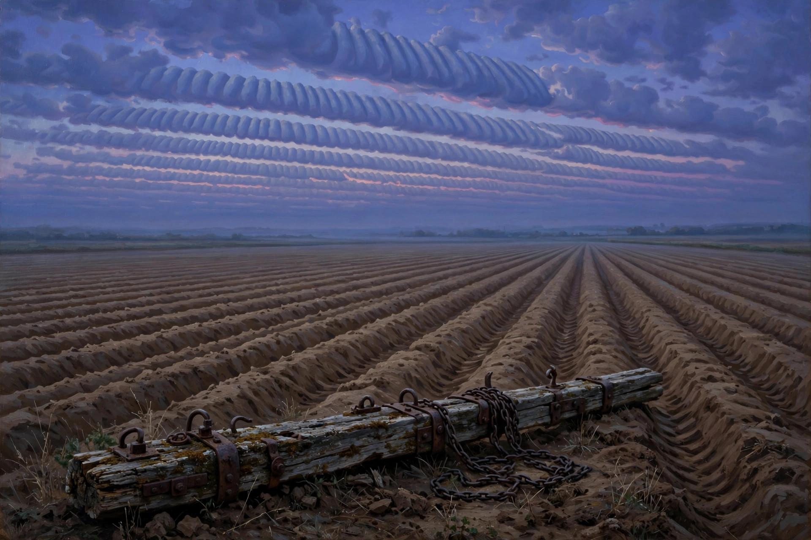
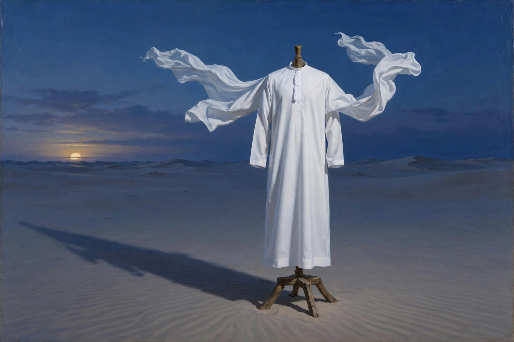
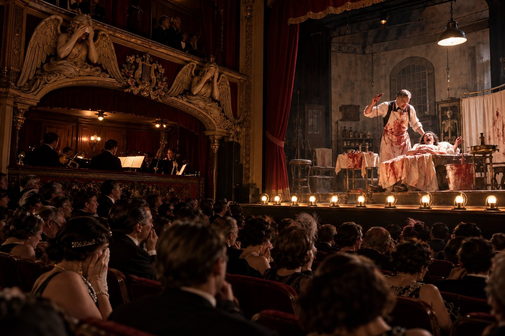
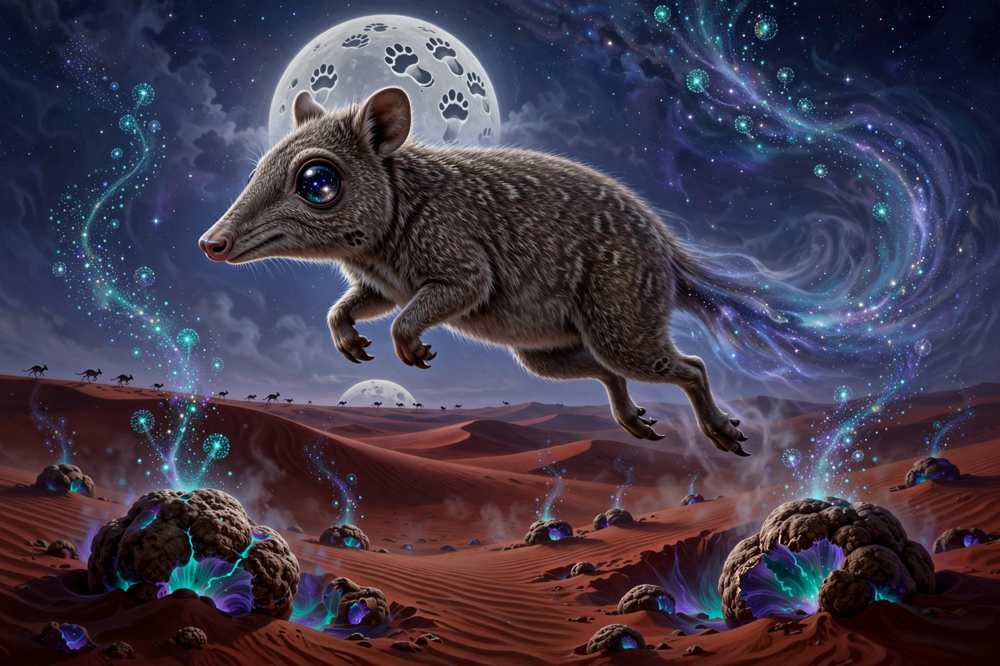

BLOSSOM WORDS
One good word a night, grown from the Blossom board.
The funny-looking ones are always load-bearing.

Athwart, across; hawse, the bow where the anchor cables run — from Old Norse háls, "neck." A ship lying across another's bow, cables crossed: two ships can share a harbor; they cannot share a hawse.

Old French aveugler, "to blind" — to persuade by deception or flattery until the mark walks in smiling, convinced it was his own idea. First the eyes, then the feet.

Persian khashkhash ("poppy") via Hindi — one doubled word for two things: white poppy seeds ground into curry pastes, and the fragrant vetiver root woven into cooling doorway mats. Only sounds like couscous; they're strangers.

French sosie, from Latin Sosia — a person's exact double. Named for the slave in Plautus's Amphitruo whose face Mercury stole — then beat him and sent him home doubting his own name.

New Latin mysticētus, from Greek mustikētos — a copyist's error for ho mūs to kētos, "the mouse, the whale." A baleen whale, named by a 2,000-year-old typo. The mustache name (Mystacoceti) lost; the typo won. Tonight's unfound pangram.

Bemba/Chichewa ngwee ("bright, shining") — a Zambian monetary unit, one hundredth of a kwacha. Named for Zambia's bright future after independence in 1964; introduced in 1968.

Middle English, from Middle French, from Latin aeternus (from aevum, "age") — eternal, everlasting. Shakespeare forged Mars's armour "for proof eterne" in Hamlet; the word retired and left "eternal" to do the work.

Tagalog tangan ("hand") + reduplication — the castor oil plant, Ricinus communis. Hand after hand of palmate leaves, medicine and poison in the same spiky pod.

Greek palin ("again") + lalia ("speech, babble") — the involuntary repetition of one's own words, each echo arriving faster and quieter than the last. Say it twice and you've demonstrated the symptom.

Old English nīedfȳr — a ritual fire kindled by friction in a time of calamity, lit to protect the herd from plague while every other hearth in the district stood cold.

The personification of memory — one of the three elder Muses, before the famous nine. She survives by hiding inside other words: mnemonic, amnesia, anamnesis.

The whiffletree of a harrow — the draft bar at the back of the harrow. The clouds overhead got combed into furrows to match.

Arabic dishdāsha — an ankle-length, long-sleeved robe worn by men across the Arab world. One robe, three names: dishdasha, thawb, kandura.

The Lyonnaise puppet hero; Grand Guignol — the Paris theatre (1897–1962) famous for naturalistic horror. The carved chapel angels cover their eyes.

Greek borborygmos — intestinal rumbling caused by gas moving through the intestines. The word that rumbles, rendered as a purring stomach-cloud in a bow tie.

Dharug buduru — a small nocturnal marsupial, a rat-kangaroo; it eats underground truffles and scatters their spores, gardening the forest.

Middle English marschal (marshal) + -see (jurisdiction) — the Marshal's court, and its prison; Dickens's father was jailed there for a £40 debt in 1824.